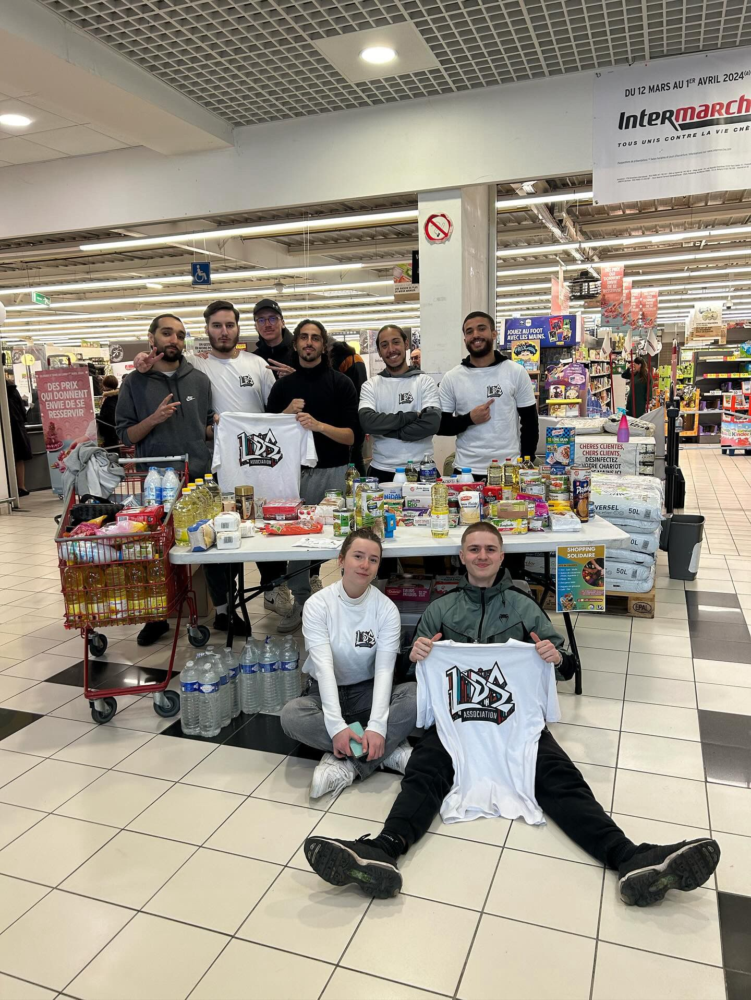

Maraude mensuelle
Chaque dernier samedi du mois, nous sillonnons les rues pour distribuer des repas chauds, des vêtements et des produits d’hygiène aux personnes sans-abri.


Grâce aux fonds collectés lors de nos événements, nous menons des actions concrètes au quotidien pour soutenir les familles et les personnes vulnérables de Tremblay-en-France et des communes voisines.
“On ne peut pas aider tout le monde, mais tout le monde peut aider quelqu’un.”
Chaque dernier samedi du mois, nous sillonnons les rues pour distribuer des repas chauds, des vêtements et des produits d’hygiène aux personnes sans-abri.
Deux fois par an, nous ouvrons nos portes aux familles dans le besoin orientées par les services sociaux municipaux. Chaque famille repart gratuitement avec des vêtements, un kit d’hygiène et un colis alimentaire.
En partenariat avec le collège René Descartes, nous fournissons du matériel scolaire aux élèves qui en ont besoin tout au long de l’année.
Des petites actions qui font une grande différence : faire les courses pour une personne à mobilité réduite, prêter du matériel, venir en aide à un enfant dont la famille n’a pas les moyens, ou simplement apporter un soutien concret.